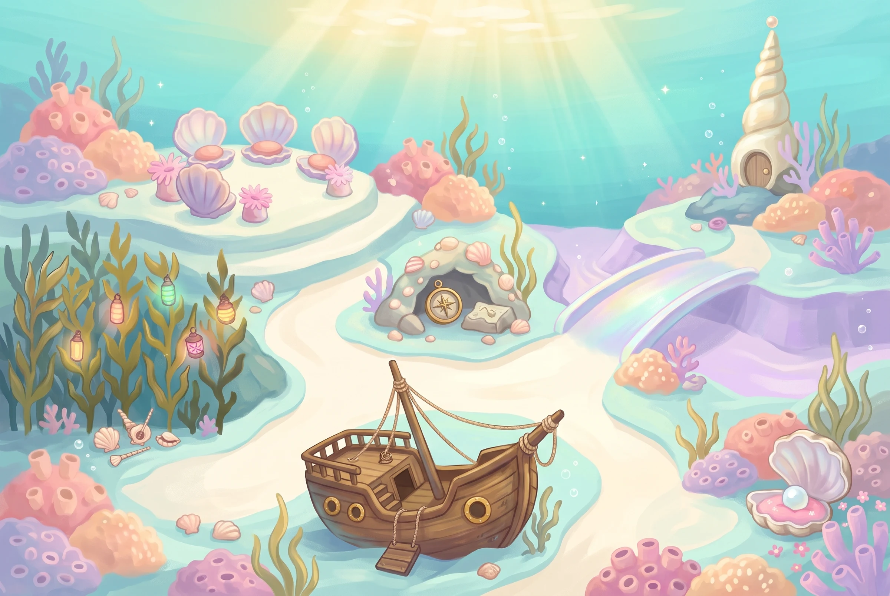
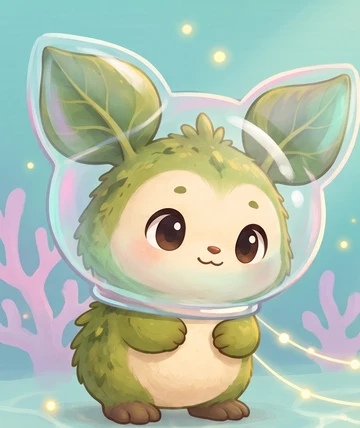

עולם 2 · מסע חדש מתחת למים


✦ סיור במפה · המשחקים ייפתחו בהמשך
36 תחנות קטנות. שלושה חברים. שונית אחת שמחכה לאור.
כל החברים, כל הסיפורים
הסרטון לא נטען. אפשר לפתוח אותו שוב מהרשימה.
תצוגה מקדימה: אפשר לצפות בכל הסיפורים. אין שינוי בהתקדמות במשחק.